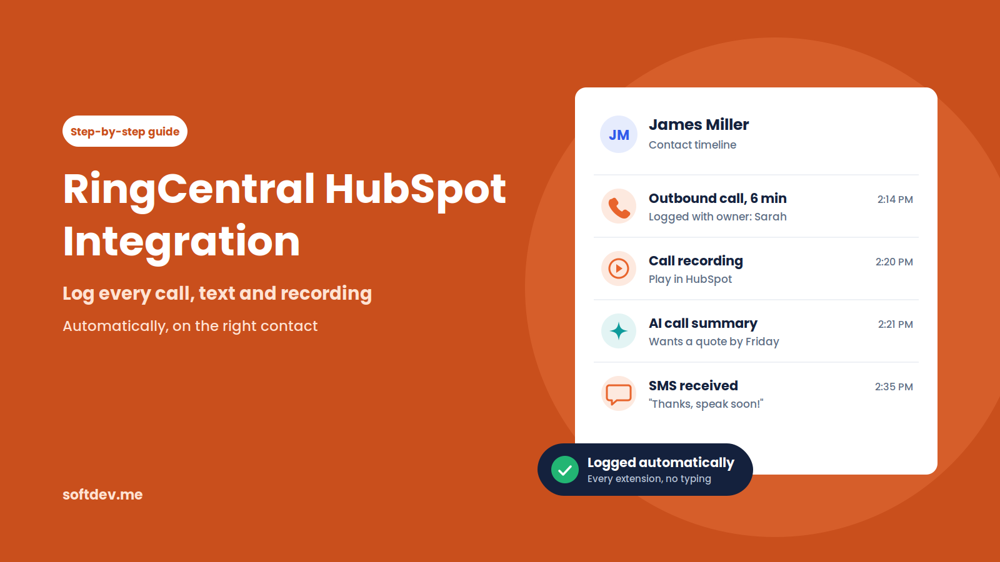
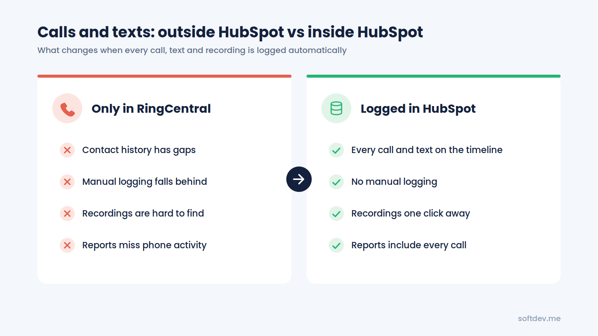
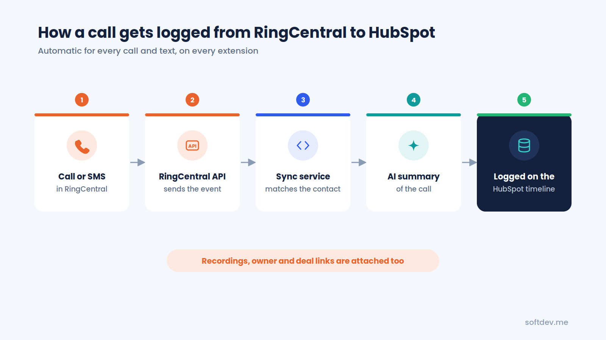
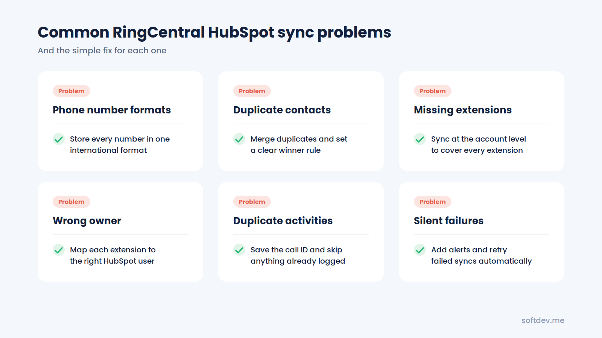
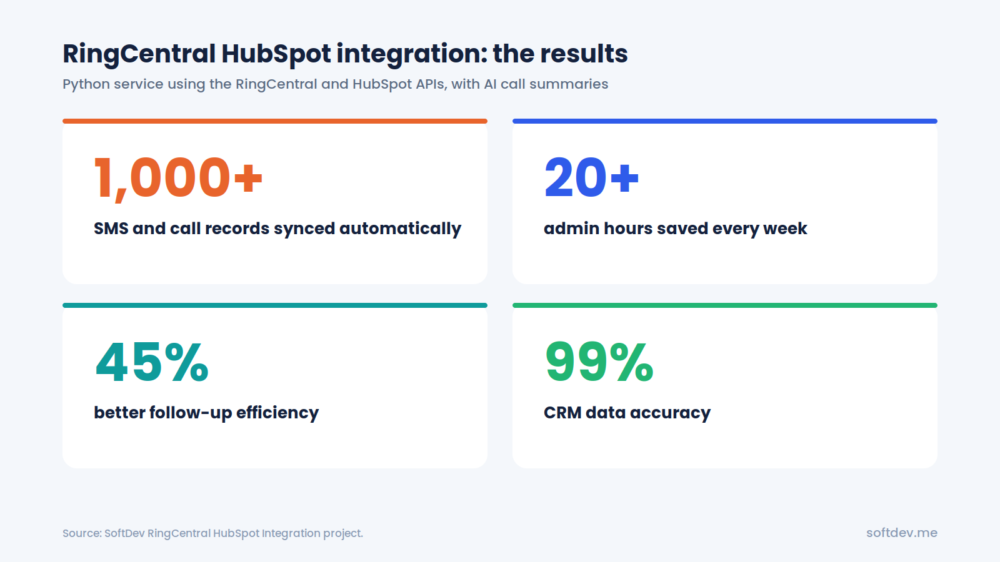

RingCentral HubSpot Integration: How to Log Calls, SMS and Recordings
A simple guide to RingCentral HubSpot integration: your options, what should be logged, and how to get every call, text and recording onto the right contact automatically.

TL;DR - 6 takeaways - 15-second read
- If your team calls and texts customers from RingCentral, every conversation should show up in HubSpot automatically.
- RingCentral's own HubSpot app adds click-to-dial and call logging inside HubSpot, and needs a RingEX Core, Advanced, or Ultra plan.
- No-code tools like Zapier or Make can cover simple logging, but often struggle with recordings, many extensions, and high volume.
- A custom API sync can log calls, SMS, recordings, and AI summaries from every extension, using your own rules.
- Clean phone numbers and clear owner mapping matter more than which tool you pick.
- Our custom sync logged 1,000+ calls and texts, saved 20+ admin hours a week, and raised CRM data accuracy to 99%.
Introduction
Your sales rep finishes a great call with a potential customer. Someone from support sends a text to confirm that an issue has been fixed. A manager listens to a call recording to review a customer complaint.
All of these conversations happen in RingCentral. But unless someone manually adds them to HubSpot, they never appear in the CRM.
This is a common problem for growing teams. HubSpot is meant to give everyone a complete view of customer interactions, but calls and text messages often stay in a separate system. Reps have to copy notes into HubSpot after every conversation. When things get busy, they forget, and important details get lost.
In this guide, we'll look at three ways to connect RingCentral with HubSpot, what information a good integration should capture, and some common issues to watch out for.
We'll also walk through a custom integration we built that automatically syncs calls, text messages, and recordings to HubSpot, along with AI-generated summaries.
Why Your Calls and Texts Should Be in HubSpot
If your team only makes a handful of calls each week, logging them manually might not seem like a big deal. But when calls and text messages become a regular part of your customer communication, keeping them outside HubSpot creates several problems.
Incomplete customer history
A sales rep opens a contact in HubSpot and sees emails and meetings, but there's no record of the calls or text messages from the past few days. Without that context, it's harder to continue the conversation naturally.
Manual work adds up
Adding notes to HubSpot after every call takes time. On busy days, reps often put it off or skip it altogether. Over time, important information gets left out.
Call recordings are difficult to find
When recordings are stored only in RingCentral, team members have to search through call logs using dates and phone numbers whenever they need to review a conversation.
Follow-ups can easily be missed
A customer might send a text asking for a callback, but if nobody adds it to HubSpot, there's no task or reminder to make sure someone follows up.
Reports don't show the full picture
HubSpot can only report on the activity it receives. If calls and texts aren't being logged, managers don't have an accurate view of how much communication is happening or how effectively the team is following up.
The goal is simple: every call and text should automatically appear on the right HubSpot contact, along with its recording and a short summary. Nobody should have to enter that information manually.

3 Ways to Connect RingCentral and HubSpot
There are a few ways to connect RingCentral with HubSpot. The right choice depends on your RingCentral plan, how your team works, and how much control you need over the data being synced.
Option 1: RingCentral's Official HubSpot App
RingCentral has an official HubSpot integration called RingEX by RingCentral, available through the HubSpot App Marketplace. It's a HubSpot Certified App that brings RingCentral calling features directly into HubSpot.
According to its marketplace listing, the integration supports:
- Making calls directly from HubSpot using click-to-dial.
- Adding call dispositions to HubSpot activity records.
- Logging calls against contacts, companies, deals, and tickets.
- Automatically adding call recordings, SMS messages, and notes to contact records.
- Using RingCentral's AI Assistant to generate call summaries.
You'll need a RingEX Core, Advanced, or Ultra plan to use it.
For teams that want a straightforward way to bring calling into HubSpot, this is a good starting point. However, it's worth testing the integration with your own setup before rolling it out across the team.
At the time of writing, the HubSpot App Marketplace listing has a rating of 2.6 out of 5 from 103 reviews.
Option 2: Zapier or Make
If you don't want to build a custom integration, automation platforms like Zapier and Make can connect RingCentral with HubSpot. For example, you can create a workflow that runs whenever a new call or SMS is received and automatically adds it to HubSpot as an activity.
This approach works well for smaller teams with straightforward requirements and a relatively low volume of calls and messages. However, things become more complicated when you need to capture call recordings, generate AI summaries, cover every extension, or match conversations with the correct contacts.
There's also the ongoing cost to consider. Both platforms typically charge based on task or operation usage, so costs can increase as your automation handles more activity.
Option 3: Custom API Integration
A custom integration connects RingCentral and HubSpot directly through their APIs.
A small backend service monitors incoming calls, text messages, and recordings from RingCentral. It then finds the matching contact in HubSpot and adds the relevant information to their activity timeline.
This takes more development work than using an existing app or no-code platform, but it gives you much more flexibility.
You can decide exactly what information gets saved, how contacts are matched, which team member owns each activity, and what additional details should be included, such as AI-generated call summaries.
Quick Comparison
| Feature | Official App | Zapier / Make | Custom API |
|---|---|---|---|
| Setup time | Quick | Quick | A few days to a few weeks |
| Click-to-dial | Yes | No | Optional |
| Call and SMS logging | Yes | Yes, with event setup | Yes |
| Call recordings | Yes | Limited | Yes |
| AI summaries | RingCentral AI Assistant | Possible with extra steps | Fully customizable |
| Every extension | Depends on user setup | Harder to manage | Yes |
| Contact and owner matching | App's own rules | Basic | Custom rules |
| Ongoing cost | Included with eligible RingEX plans | Per-task pricing | Hosting and maintenance |
| Best for | Teams wanting calling inside HubSpot | Simple, low-volume workflows | Complete logging at scale |
What Should a Good Integration Log?
Regardless of which integration method you choose, make sure it captures the information your team actually needs.
A complete RingCentral and HubSpot integration should include the following details on each relevant contact record:
| Information | Why It Matters |
|---|---|
| Call details | Shows the call direction, time, duration, and outcome. |
| Call recording | Allows reps and managers to listen to important conversations without searching through RingCentral. |
| AI call summary | Provides a quick overview of the conversation without having to listen to the entire recording. |
| SMS messages | Keeps text conversations alongside calls and emails in one place. |
| Call owner | Shows which team member handled the interaction, helping with reporting and follow-ups. |
| Associations | Connects the activity to the relevant company, deal, or ticket, rather than just the contact. |
If your current setup only captures some of this information, that's a good sign that it may need improvement.
How a Custom RingCentral and HubSpot Sync Works
Building a custom integration might sound complicated, but the basic process is quite straightforward.
Here's what happens whenever someone makes a call or sends a text:
1. Capture the activity
A backend service monitors the RingCentral API for new calls, SMS messages, and recordings across all extensions.
2. Find the matching contact
The service cleans up the phone number and searches HubSpot for a contact with the same number. If no matching contact exists, it can create a new one.
3. Generate an AI summary
For calls with recordings, an AI model processes the conversation and creates a short summary. It can include the main discussion points and any follow-up actions mentioned during the call.
4. Log everything in HubSpot
The call or text message is added to the contact's HubSpot timeline, along with the recording link, AI summary, and correct activity owner.
5. Connect related records
When necessary, the activity is also associated with the relevant company, deal, or ticket.
Once everything is set up, the process runs automatically in the background, usually within moments of the call ending. Reps don't have to manually update anything.

Common Problems and How to Fix Them
Most integration issues aren't necessarily caused by RingCentral or HubSpot themselves. They often come down to data inconsistencies or small gaps in the setup.
Here are some common problems and how to deal with them.
| Problem | What Happens | How to Fix It |
|---|---|---|
| Different phone number formats | RingCentral sends a number like +14155550123, while HubSpot stores it as (415) 555-0123. The integration fails to find a match. | Use one international phone number format and clean up existing records before launching the integration. |
| Duplicate contacts | Two contacts share the same phone number, so an activity might get added to the wrong record. | Review and merge duplicate contacts, then establish clear matching rules. |
| Missing extensions | Calls from some team members never appear in HubSpot. | Set up account-level syncing so all extensions are covered. |
| Incorrect activity owner | Every call appears under the same admin user instead of the person who handled it. | Map each RingCentral extension to the correct HubSpot user. |
| Recordings don't play | A recording link in HubSpot is broken or requires a separate RingCentral login. | Store recordings somewhere the team can access, with the appropriate permissions. |
| Duplicate activities | The same call gets added to HubSpot more than once. | Save each RingCentral call ID and check whether it has already been processed. |
| Sync failures go unnoticed | The integration stops working, but nobody realizes it until days later. | Add error alerts and automatic retry logic to catch failed syncs. |
In our experience, getting phone number formats and user mapping right from the beginning can prevent many of these issues.

Real Example: Our RingCentral HubSpot Integration
One of our clients had sales and support teams handling calls and text messages through RingCentral every day.
Their team was manually logging activities in HubSpot, extension by extension. It took several hours each week, and even then, their customer records were often incomplete.
We replaced that process with a direct API integration built in Python, connecting the RingCentral API with the HubSpot API.
Here's how it works:
1. Automatic call and SMS capture
A Python service monitors RingCentral for new calls, text messages, and recordings across every extension.
2. AI-generated summaries
Each interaction is processed to create a short AI summary explaining what the conversation was about.
3. Automatic HubSpot syncing
Call details, recordings, and summaries are added to the correct contact's HubSpot timeline in real time.
After implementing the integration, we saw the following results:
| Result | What It Means |
|---|---|
| 1,000+ calls and SMS records synced automatically | No more manual activity logging across extensions. |
| 20+ admin hours saved every week | The team can spend more time helping customers instead of entering data. |
| 45% better follow-up efficiency | Reps have access to previous conversations before contacting customers. |
| 99% CRM data accuracy | Automatic syncing helps keep communication records complete and consistent. |
The biggest improvement was that the team could finally rely on the information in HubSpot.
Anyone opening a contact record could see the calls and texts associated with that customer, along with a short summary of what had happened.
We've also built similar integrations for other communication channels, including our WhatsApp Business Sync and Telegram Bot Integration, which automatically send messages to HubSpot.

Which Integration Option Should You Choose?
The best option depends on what you need from the integration.
Here's a simple way to decide:
- Choose RingCentral's official app if you're using an eligible RingEX plan and mainly want to make calls from HubSpot with basic activity logging. It's a good idea to test it with a few users first and check that it captures everything your team needs.
- Choose Zapier or Make if you only need to log a small number of calls and messages and want something working without hiring a developer.
- Choose a custom API integration if you need reliable syncing across every extension, want to include recordings and AI summaries, or need more control over contact matching and activity ownership.
Still not sure which approach is right for your team?
Start by opening ten recent contacts in HubSpot and comparing their activity history with the corresponding RingCentral call logs. This should give you a better idea of what's missing and whether your current integration is doing enough.
Conclusion
Phone calls and text messages are often where some of the most important customer conversations happen. When those interactions stay in RingCentral instead of HubSpot, teams lose valuable context, follow-ups get missed, and reports don't reflect the full picture.
Connecting the two platforms helps bring everything together. Calls, messages, recordings, and summaries can all appear on the right HubSpot contact automatically.
Whether you use RingCentral's official app, a no-code automation platform, or a custom API integration, the important thing is to make sure the system works reliably.
Pay attention to phone number formatting, contact matching, and user mapping from the beginning. These small details can make a big difference in how well the integration works over time.
Frequently Asked Questions
Does RingCentral have an official HubSpot integration?
Yes. RingCentral offers a HubSpot Certified App called RingEX by RingCentral, available in the HubSpot App Marketplace. It supports calling and activity logging and requires a RingEX Core, Advanced, or Ultra plan.
Can call recordings be saved in HubSpot?
Yes. RingCentral's official app can log call recordings on contact records. A custom integration can also attach recording links and AI-generated summaries to each call activity.
Will SMS messages appear in HubSpot?
Yes. The official RingCentral app supports SMS logging. You can also build a custom integration to sync text messages from every extension to the correct contact timeline.
Do I need a developer to connect RingCentral and HubSpot?
Not necessarily. You can use RingCentral's official app or set up a basic workflow through Zapier or Make without writing code.
However, if you need a custom integration with advanced contact matching, call recordings, AI summaries, and more control over how information is synced, you'll need development work.
How long does it take to build a custom integration?
A basic integration that syncs calls and SMS messages can take a few days to build.
If you also need call recordings, AI summaries, extension-to-user mapping, and associations with deals or tickets, the project can take around one to three weeks, depending on the requirements.